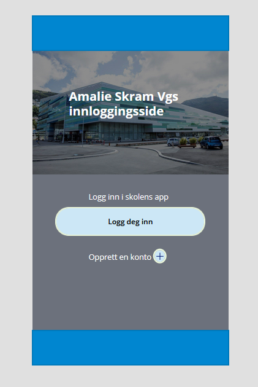
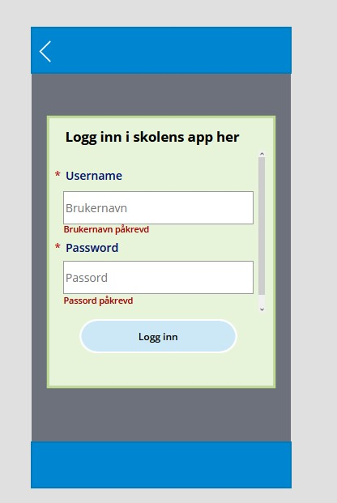
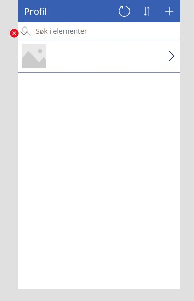

i denne oppgave har vi jobbet med PowerApps, Men først prøvde vi MIT app inventor. MIT var ikke så bra og veldig uttdatert, så vi begynte at bruke PowerApps. Hele gruppe arbeided var vanskeligt når der kun var en som kunne jobbe i appen. Vi brukte også litt for mye tid på å lære oss PowerApps som fikk oss til å ikke bli ferdig.
appen skulle hjelpe folk med å huske navne og informationer om folk på Amalie Skram.
  
I PowerApps oppgaven har jeg prøvd å jobbe hardt. Men det var veldig vanskeligt at får noe gjort.
Sette opp database var vanskeligt når der ikke var mye information om hvordan det settes opp.
Noen ganger var det smart at se på de mal som Powerapps hadde lagt utt.